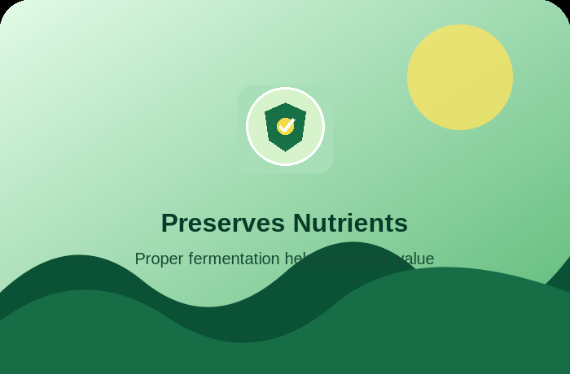
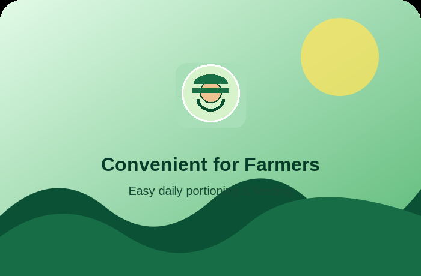
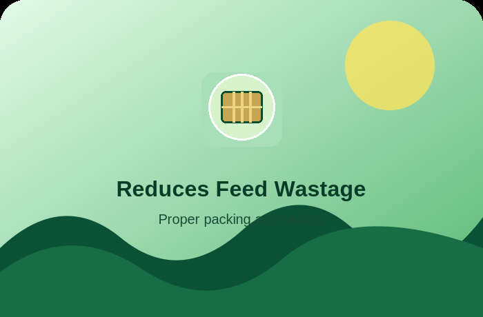
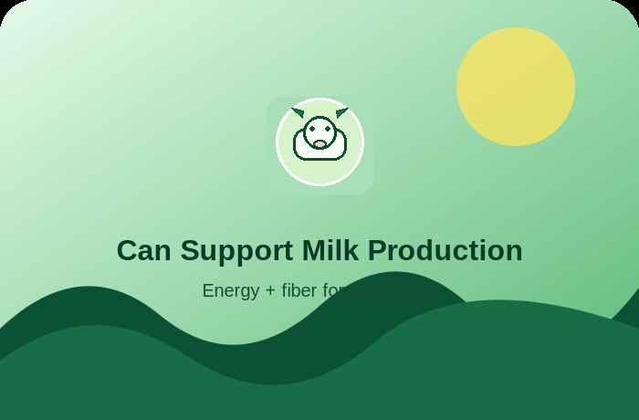

FARM FAVOURITE
FARM FAVOURITE01 / LIVESTOCK FEED
Shahi Grass Silage
Conveniently stored forage for a consistent feeding routine.
৳350 / packet↗
Reliable nutrition for your livestock with carefully prepared grass silage from SHAHI AGRO FARM.

Thoughtful farm products designed around everyday livestock care and practical feeding.
FARM FAVOURITEConveniently stored forage for a consistent feeding routine.
 DAIRY
DAIRYOur farm's commitment to quality, care and responsible production.
Farm-minded sourcing with a focus on useful, dependable feed.
 PURE GHEE
PURE GHEERich aroma and traditional taste, made from milk fat. Choose the jar size that suits your home.
Rich aroma, traditional taste and two clearly priced jar sizes.
Explore the practical benefits of thoughtful livestock feeding and farm-first service.

Green forage as part of a balanced feeding plan.
Support your herd with consistent daily care.

Build a practical routine around your animals.

Ask us about pack sizes, availability and delivery.

Thoughtful handling helps make the most of forage.
SHAHI AGRO FARM believes dependable farm products start with care, consistency and honest communication. Tell us what your farm needs and we’ll help you find the right option.
Talk to our team ↗
Share your details and we'll open WhatsApp with your order message ready to send.